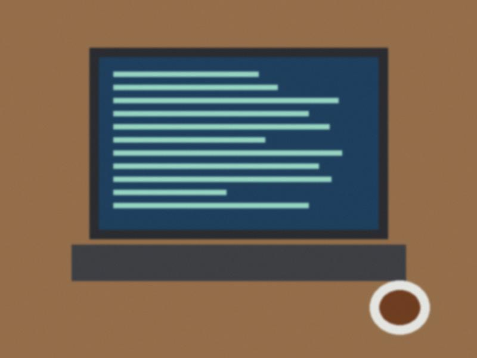

A tile baking in the old kiln
The first new tiles for the dome, fired in a village kiln below the Chatkal.
Dn. Denha · 17 May 2026 · Issue 282 min read

One of the first new tiles on the sacristy table, next to the rector's glasses.My father's brother runs a kiln in a village two days' walk from where I was born. The cathedral asked the old potter if he could make tiles to match the dome: ribbed, turquoise, the same glaze. The first dozen came up the hill in a cart this week, wrapped in straw. They are almost the right colour. Almost is the problem.
The rector held one up to the dome and squinted for a long time. "It needs another year in the sun," he said. "Like all of us."